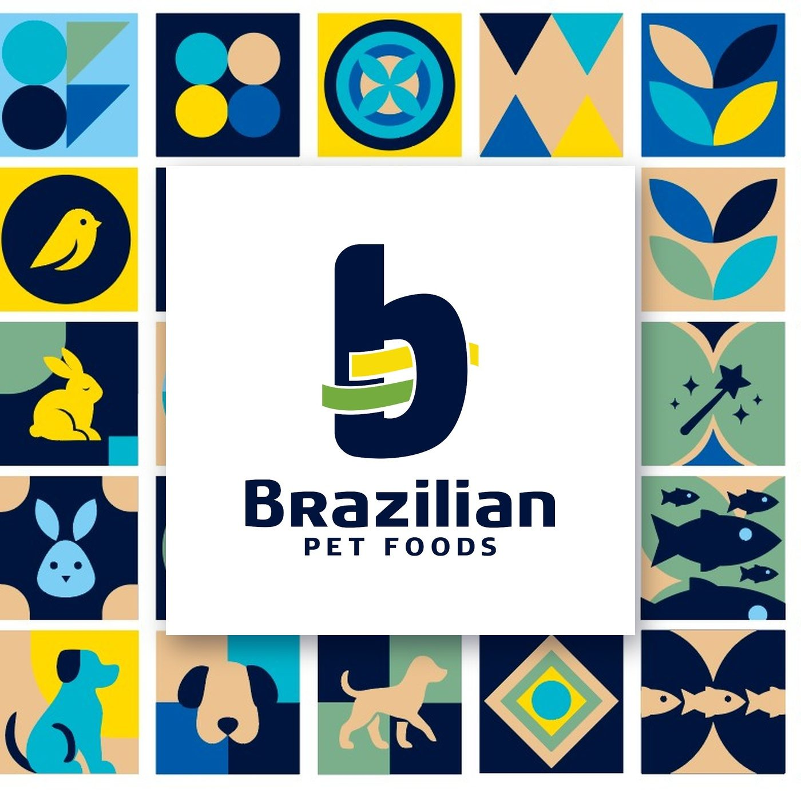
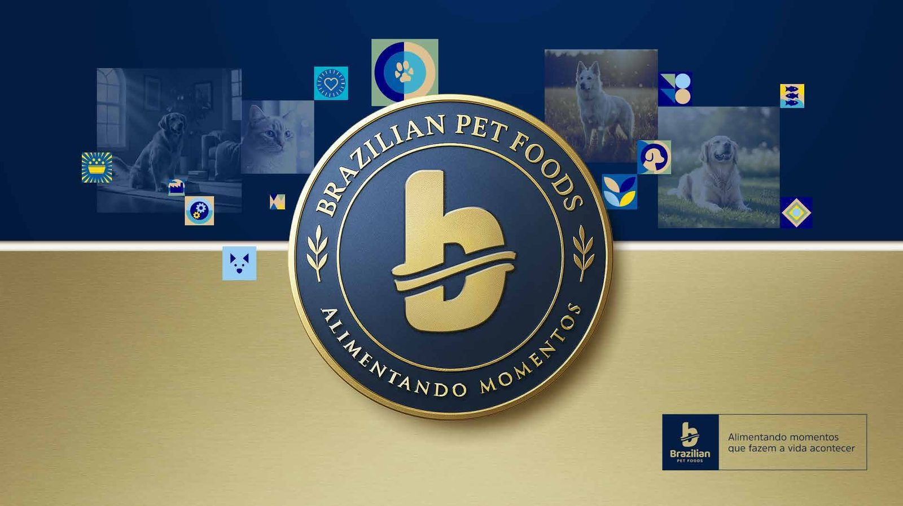
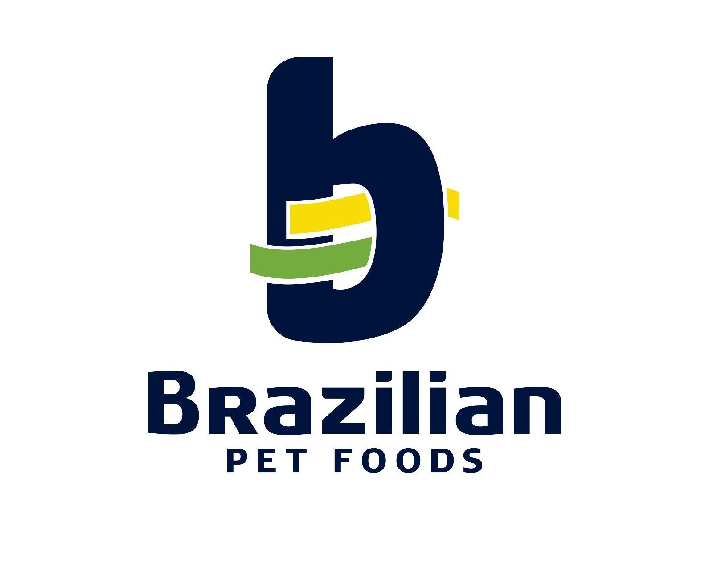
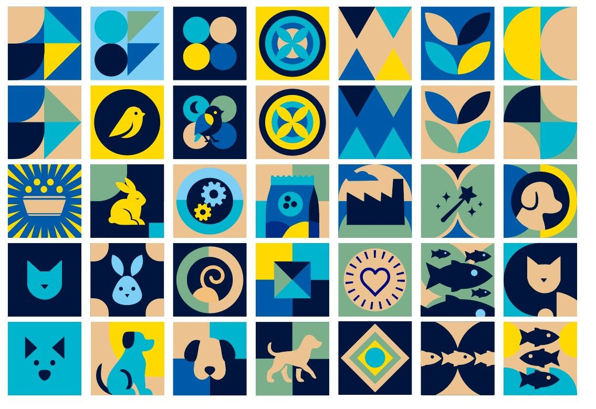

01 / BRAND SYSTEMS
Brazilian
Pet Foods.
Brand evolution · Packaging · Digital · Commercial
One brand ecosystem. Multiple audiences, products and touchpoints.
Brand identity and visual communication for a multi-brand pet food company, spanning packaging, digital experiences and commercial materials.
Explore the brand ↗


